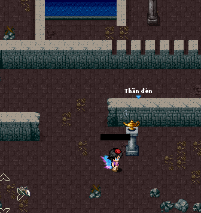

Dành cho người trên 18 tuổi. Chơi quá 180 phút sẽ có hại cho sức khỏe.
Dành cho người trên 18 tuổi. Chơi quá 180 phút sẽ có hại cho sức khỏe.


* Update tính năng trong phiên bản 1.9.6:
Vượt Mê Cung


- Các hiệp sĩ có level từ 40 trở lên muốn tham gia thì mua vé vượt mê cung tại Cửa Hàng.
- Mỗi ngày các bạn sẽ được tặng vé mê cung trong quà hằng ngày, nếu hành trang đầy có thể không nhận được nhé.
- Chúng ta chỉ có đúng 5 phút để tìm được map có kho báu
- Hết thời gian thì sẽ xem như thất bại
- Trong mê cung , đôi khi các bạn sẽ lạc vào map có các vị thần canh cửa , tiêu diệt được vị thần canh cửa đó mới có thể đi ra cửa đó
- Tìm được đến map có Đèn Thần xem như tìm kho báu thành công , bấm vào để nhận Đèn Thần
- Map mê cung có Thùng gỗ đặc biệt để người chơi có thể săn thùng . Nếu đập vỡ bạn có thể nhận được ngẫu nhiên các vật phẩm như xu , HP lớn , MP lớn , ngọc , đồ Jasmin hoặc Aladin thời hạn , viên đá không gian . Tuy nhiên nếu đập trúng thùng chứa quả boom, có thể bị nổ tung chết.
- Ngoài ra , các bạn nhớ cảnh giác những người chơi khác vì họ cũng có thể tham gia tiêu diệt bạn
- Vé mê cung chỉ tặng cho nhân vật từ level 20 trở lên
- Phần quà khi sử dụng Đèn Thần ngẫu nhiên trong các vật phẩm sau :
1. 1 Thẻ trao đổi đồng/bạc/vàng/kim cương không khóa[Chỉ có Mê cung mới có thẻ kim cương]
2. 1 Đồ thời trang thời hạn : đồ Alladin/ đồ công chúa Jasmin[luôn có , nhân vật nam sẽ chỉ mở ra đồ Aladin và ngược lại]
3. 1 Đục huyền bí cấp 1/2/3
4. 1 Đá 3 màu
5. 10-20 Cỏ 3 lá
6. 100~200 Bình MP 600
7. 100~200 Bình HP 6000
8. 3~5 Thánh giá
9. 3~5 Xương
10. 3~5 Đá ánh sáng cấp 1/2
11. 3~5 Đá bóng tối cấp 1/2
12. Exp luôn có ( dùng cánh thời trang không tăng exp thì sẽ không nhận được)
13. 10~20 Titan cấp 1-2
14. 10~20 Kim loại vũ trụ
15. 10~20 Phù về làng
16. 1 Vé x2 đi buôn
17. 1 Sách Skill đệ tử ngẫu nhiên
18. 1 Sách tri thức
19. 100 Điểm sức khỏe
20. 5~10 thú cưỡi Heo rừng
21. 1~10 viên Đá Phân Thân
22. 1~3 Vé mở ly cánh thời trang
* Update tính năng trong phiên bản 1.9.1:
Cánh Thời Trang Bang Hội
- Để có thể mua cánh thời trang các bạn cần đủ tiền trong quỹ bang và vé mua cánh thời trang bang
- Vé mua cánh thời trang bang hội có thể kiếm trong chiếm mỏ , khi các bạn đánh sập mỏ thì sẽ có khả năng nhặt được vật phẩm này
- Vé có thể mua bán nên các bạn có thể chuyển cho thủ lĩnh
Thẻ Giao Dịch Trong Chợ Đen
- Khu chợ đen là nơi có thể giao dịch vật phẩm đã khóa
- Chỉ có thể giao dịch đồ đã khóa khi bên bán và bên mua đều có thẻ giao dịch giống nhau. Khi hoàn thành giao dịch , 2 bên sẽ bị trừ thẻ
Ví dụ : A muốn rao bán cây vũ khí đã khóa cho B, thì A và B phải có thẻ bạc
Ví du 2 : C muốn bán cho D áo đã khóa , thì C và D cùng phải có thẻ Vang
- Thẻ Giao Dịch Chợ Đen có 4 loại :
1. Thẻ Đồng : giao dịch trang sức [ Nhẫn - Dây Chuyền ] đã khóa
2. Thẻ Bạc : giao dịch vũ khí đã khóa
3. Thẻ Vàng : giao dịch trang bị [ Áo - Quần - Nón - Găng (Vòng)] đã khóa
4. Thẻ Kim Cương : giao dịch mề đay đã khóa
Lưu ý : Khu chợ đen vẫn còn là 1 bí mật , nhưng trong thời gian diễn ra sự kiện các bạn phải tranh thủ gom thật nhiều thẻ giao dịch chợ đen
- Thẻ Giao Dịch Trong Chợ Đen có thể kiếm trong quà trả mị nương và khi hoàn thành ải 20 phó bản ( chỉ phó bản mất phí ) cũng có ngẫu nhiên nhặt được.
- Hiện tại trong thời gian chạy sự kiện không thể mua bán các thẻ , kết thúc sự kiện sẽ cho phép mua bán
Sách Skill Đệ Tử
1. Sách Hộ Vệ Bóng Tối : Kỹ năng bổ trợ . Tăng 20% max máu , có tác dụng lên đội ( sư phụ , party của sư phụ )
2. Sách Thuật Chuyển Đổi : Kỹ năng bổ trợ . Chuyển 20% sát thương của địch thành máu , có tác dụng lên đội ( sư phụ , party của sư phụ )
3. Sách Giảm Nội Tại : Kỹ năng bổ trợ . Giảm 20% chí mạng, né đòn ,phản sát thương, xuyên giáp của đối thủ , có tác dụng lên đội ( sư phụ , party của sư phụ )
4. Sách Thuật Hóa Giải : Kỹ năng bổ trợ . Giảm 20% thời gian tác động của hiệu ứng bất lợi lên nhân vật , có tác dụng lên đội ( sư phụ , party của sư phụ )
- Hiện tại sách skill chưa cho giao dịch
- Chức năng học skill cũng chưa update
1 số thay đổi Top Thi Đấu
Chia nhóm lôi đài như sau :
+ Nhóm 1 : từ level 60 đến 74
+ Nhóm 2 : từ level 75 đến 84
+ Nhóm 3 : từ level 85 đến 94
+ Nhóm 4 : từ level 95 đến 104
+ Nhóm 5 : từ level 105 đến 114
+ Nhóm 6 : từ level 115 đến 124
+ Nhóm 7 : từ level 125 đến 134
+ Nhóm 8 : từ level 135 trở lên
1 số thay đổi về Mở Ly
- Nếu toàn sever mở đủ 20.000 ly thì sẽ được x2 toàn bộ trong vòng 24h
- Ngoài ra , giá vé mở ly vàng tăng giá.
* Update tính năng trong phiên bản 1.8.7:
[2019-3-20 ]
Luyện Đệ Tử
- Đệ luyện đệ tử , các bạn vào NPC ODa chọn chức năng
- Các bạn sẽ biến thành đệ tử và có thể tiến hành đánh quái , làm nhiệm vụ , trang bị cho đệ tử của mình
- Hành trang , số ngọc - số vàng sẽ xài chung với nhân vật chủ.
- Nếu hủy đệ tử , bạn sẽ mất trang bị đệ tử đang sử dụng ( các bạn có thể tháo những trang bị đó đi ). Khu vườn - tóc mua cho đệ tử cũng sẽ mất
- Đệ tử chưa mở học kỹ năng mới nhé.
- Đệ tử sẽ mặc định level 10 khi các bạn nhận đệ tử. Dưới level 30 sẽ không bị đồ sát
- Khi thoát game sẽ thoát Luyện Đệ Tử
- Level đệ tử không lớn hơn level chủ
- Mỗi ngày chỉ có luyện đệ tử 180 phút, để luyện thêm các bạn phải mua vé . Mỗi ngày chỉ có thể sử dụng 1 lần/ 1 vé
****Khi không luyện đệ tử :
1. Đệ tử đeo cờ theo chủ khi chủ gọi đệ tử
2. Dưới level 30 sẽ không bị đồ sát
3. Khi đệ tử bị mất , 10 phút sau mới có thể thể gọi đệ tử
Lưu ý :
- Khi đang luyện đệ tử , không được phép tạo bang hội , tham gia bang hội , không chiếm thành , không được PK , không được chiếm mỏ , không thể kết bạn
- Không được nạp tiền khi đang luyện đệ tử, mọi mất sẽ không giải quyết.
- Đệ tử làm nhiệm vụ sẽ không có ngọc.
- Để tử không xài chung khu vườn với sư phụ nhé
- Pk của đệ tử theo sư phụ . Ví dụ : sư phụ đeo cờ tím , đệ tử sẽ đeo cờ tím ...
- Nếu sư phụ ( do > level boss ) không đánh được boss thì khi dắt đệ ( cùng level với Boss ) cũng không đánh được , trừ khi là luyện đệ tử ( cùng level boss ) thì mới săn bình thường nhé. Các bạn chú ý
Đăng Nhập Tự Động Khi Bị Mất Kết Nối
- Từ phiên bản 1.8.7 trở đi , khi nhân vật bị mất kết nối ( không tính tự bấm nút thoát ) máy chủ sẽ tự động đăng nhập tự động vào game
- Tuy nhiên , khi bị mất kết nối ở các map không đánh quái như làng sói trắng , thành phố kho báu hay thị trấn mùa đông v.v thì không tự động đăng nhập
- Bảo trì định kỳ vào 5h00 sẽ không đăng nhập tự động vì nhân vật chỉ lưu tọa độ 10 phút thôi
Vật Phẩm Tự Động Đánh
- Nếu nhân vật sử dụng vật phẩm tự động đánh thì khi bị mất kết nối và tự động đăng nhập , nhân vật sẽ tự động đánh quái mà không cần phải bật.
- Vật phẩm này lưu tọa độ vĩnh viễn.
- Vật phẩm có bán ở NPC Lisa/Emma
- Không giới hạn số lượng sử dụng
- Lưu vị trí khi nhân vật dùng khu 2 , khi mất kết nối sẽ vào lại khu 2
Lưu ý : Vui lòng tải phiên bản mới nhất 1.8.7
Mở Ly Cánh Thời Trang
- Mở ly sẽ update thêm vật phẩn mới : Cánh Thiên Thanh , Cánh Ngũ Sắc , Cánh Hỏa Tinh , Cánh Cầu Vòng
- Để mở ly cánh thời trang các bạn cần vé mở ly cánh.
- Nếu may mắn các bạn thể mở được vật phẩm vĩnh viễn.
* Update 1 số thay đổi về Phó bản
[2019-1-24 ]
- Khi các hiệp sĩ tham gia Phó Bản mất phí thì đồ rơi trong phó bản sẽ x2 ( không tính nguyên liệu xanh dương ) so với Phó Bản miễn phí hay Phó bản dùng vé
* Update tính năng Đệ Tử
[2018-12-21 ]
Tìm Đệ Tử
- Trong thời gian diễn ra sự kiện , bạn sẽ bắt gặp Đứa Bé ngẫu nhiên trong các map. Sẽ có kênh thế giới nhắc nhở Đứa Bé đã xuất hiện
- Có 2 cách để biến ĐỨA BÉ thành đệ tử :
1. Dắt về NPC Mr Master để nhận Đệ Tử.
2. Nhận Đứa Bé ngay thành Đệ Tử. ( mất ngọc ).
Đối với cách 1
- Các bạn phải tìm Đứa Bé ngẫu nhiên các map . Sau đó chọn dắt về chỉ cần 1 kẹo hồ lô ) Shop Lisa ), tuy nhiên trên đường dắt các bạn có thể bị cướp. Đệ tử sẽ không biến mất khi đang dắt và bị cướp . Thời gian chờ của mỗi lần cướp là 10s
- Để cướp Đứa Bé của người chơi khác , các bạn có thể tiêu diệt người đang dắt Đứa Bé và sau đó dắt Đứa Bé về cho NPC Mr Master thành công là bạn đã có 1 Đệ Tử.
- Hoặc hối lộ dụ dỗ Đứa Bé ( mất 1 ngọc không cần phải tiêu diệt người chơi kia) thì Đứa Bé sẽ đi theo bạn . Bạn chỉ cần tiếp tục dắt Đứa Bé về cho NPC Mr Master thành công . Khi đó Đứa Bé sẽ chính thức trở thành đệ tử của bạn
- 4 Map có NPC Mr Master để dắt Đứa Bé về để nhận nó thành đê tử là Bờ Biển , Nghĩa Địa Cát , Rừng Hoa Đỏ , Đèo Băng Giá. Ở nhưng map này các hiệp sỉ không thể dụ dỗ Đứa Bé của người khác được nữa ( người khác cũng không thể dụ kẹo Đứa Bé của bạn )
- Đứa Bé chỉ tồn tại 20 phút kể từ lúc xuất hiện. Trong quá trình dắt về hay dụ dỗ từ người khác , các bạn sẽ được thông báo thời gian còn lại của Đứa Bé. Nếu hết thời gian mà không dắt về kịp Đứa Bé sẽ biết mất.
- Trong quá trình các hiệp sĩ dắt không thành công ( như mất kết nối , thoát game ) ở 4 map có Mr Master thì Đứa Bé sẽ biến mất .
- Trong quá trình các hiệp sĩ dắt không thành công ( như mất kết nối , thoát game ) thì vào lại Đứa Bé sẽ vẫn còn map đó nhưng các bạn phải vào game nhanh để dắt lại nhé.
- Thương nhân , Cướp , Hiệp Sĩ không thể dẫn đệ tử
- Khi dắt Đứa Bé không thể dùng bùa về làng và cột dịch chuyển.
- Hiện tại , Đệ Tử còn quá yếu nên không thể tham gia các hoạt động như top PK , lôi đài , liên server , khu đi buôn , khu đào mỏ.
- Để gọi Đệ Tử lên , các hiệp sĩ có thể mua vé gọi đệ tử ở Lisa.
- Nếu không thích đệ tử ( giới tính ), các bạn có thể hủy vĩnh viễn đệ tử ở NPC Mr Master
- Khi 1 hiệp sĩ dắt thành công 1 Đứa Bé , nhận thành công thành đệ tử. Hệ thống sẽ tiếp tục thả Đứa Bé khác random lại vị trí sau 3 giờ. Còn nếu trường hợp Đứa Bé biến mất vì hết thời gian sống thì nó sẽ tái sinh ngay ở 1 vị trí khác
* Update tính năng Spam lời mời
- Khi 2 người muốn mời thách đấu / kết bạn / mời vào nhóm thì phải đứng kế bên nhau , cùng khu , cùng map . Tránh tình trạng các top cao thủ bị spam quá nhiều.
- Trong khi thi đấu lôi đài cũng không thể mời thách đấu / kết bạn / mời vào nhóm.
- Giảm thời gian chat của đệ tử vì chat nhiều quá không xem được thông báo khác
* Update tính năng Chặn/Bỏ chặn tin nhắn
[2018-9-23 ]
- Các bạn có thể chặn tin nhắn từ bất kì người chơi khác [ chưa kết bạn ] tại Npc Oda
- Kết bạn rồi có thể xóa họ khỏi danh sách bạn bè [ 1 chiều ] thì vẫn có thể chặn họ như bình thường
- Lưu ý : chặn tin nhắn là chặn hết tin nhắn từ người lạ, chứ không phải từng cá nhân nhé
* Update tính năng trong phiên bản 1.6.6:
[2018-4-21 ]
Ra mắt Combo skill
- Người chơi khi nhận được Combo sẽ sử dụng skill tương ứng với các skill trong combo, theo thứ tự từ trái sang phải.
- Khi nhấn đúng skill trên Combo, máy chủ sẽ cập nhật lại hình skill tương ứng, nếu nhấn sai sẽ bị hủy Combo.
- Khi nhấn đúng Combo, mỗi skill sẽ được tăng thêm sát thương tương ứng cho skill đó:
+ Skill thứ 1: tăng 50% sát thương
+ Skill thứ 2: tăng 75% sát thương
+ Skill thứ 3: tăng 100% sát thương
+ Skill thứ 4: tăng 125% sát thương
+ Skill thứ 5: tăng 150% sát thương
- Các skill sẽ được lấy ngẫu nhiên dựa trên cấp độ của người chơi.
- Người chơi có thể không bấm theo combo vẫn có thể đánh skill bình thường
- Để có được Combo thì phải khảm Ngọc Nguyên Thủy vô cho mề đay, combo có tỉ lệ xuất hiện, chỉ xuất hiện khi đánh Boss và đánh người, khi xuất hiện combo, thời gian hồi skill sẽ chuyển hết qua = 2s, nhấn đúng combo thì dame tăng, sai là hủy combo di, sát thương tăng theo thứ tự:
- Combo skill chỉ xuất hiện khi đánh boss hoặc kẻ thù , train quái sẽ không xuất hiện
Một số thay đổi về Pet
- Pet phải cho ăn thường xuyên , nếu điểm cho ăn = 0 thì pet sẽ thì không đánh, nhóm tiềm năng cũng sẽ không có tác dụng
- Pet full 4 dòng tiềm năng khi cho ăn chỉ tăng điểm cho ăn
- Pet có 1 dòng max rồi khi cho pet ăn đồ ăn mà tăng nhóm đó vẫn được , khi đó chỉ điểm cho ăn tăng thôi
Một số thay đổi về Dây chuyền mặt trăng
- Bạn đã có thể đục , và khảm ngọc vào dây chuyền mặt trăng
* Update tính năng trong phiên bản 1.6.4 :
[2017-3-19 ]
Thách đấu liên server
Điều kiện vaf đăng ký
- Các hiệp sĩ đăng kí tham gia thách đấu liên server tại NPC ODA.
- Chỉ có cho phép tham gia khi level > 39.
- Sự kiện sẽ diễn ra vào khung giờ 21h30, 1 tuần 2 lần.
- Khi đã đăng ký tham gia thành công, thì mới có thể đăng nhập vào server thách đấu.
- Ngày thứ 4 chỉ các nhân vật từ 9x trở xuống mới được tham gia
- Ngày chủ nhất là cho tất cả mọi level tham gia
- Phí đăng ký tham gia là 2 ngọc hoặc 500.000 vàng
Hướng dẫn
- Trong máy chủ thách đấu , các hiệp sĩ không thể mua bán bất kì vật phẩm nào , vì thế nếu muốn cập nhật lại thông tin trang bị đang đeo , trang bị trong hành trang để sẵn sàng cho cuộc thách đấu... phải chuẩn bị trong hành trang bên server của mình trước rồi sau đó mới đăng nhập vô server thách đấu.
- Cập nhập tại NPC ODA, trong mục thách đấu server ở server đang chơi của mình.
Nội dung chi tiết
- Tới giờ diễn ra sự kiện, máy chủ sẽ tự động chuyển tất cả người trong server thách đấu vô map thách đấu.
- Trong map thách đấu sẽ hiển thị những vùng an toàn và vùng không an toàn
- Vùng không an toàn là vùng tô màu đỏ.
- Vùng an toàn sẽ bị thu hẹp lại theo thời gian.
- Khi nhân vật ở trong vùng không an toàn, sẽ bị trừ máu theo thời gian, ở càng lâu thì số máu bị trừ sẽ càng nhiều, cho tới khi hết máu nếu vẫn còn trong vùng không an toàn.
- Khi 1 người tham gia bị giết trong map thách đấu, sẽ tạo ra 2 vật phẩm với vị trí ngẫu nhiên trên map có tác dụng :
+ Tăng 100.000 máu
+ Tăng 10000 sát thương.
- Lấy được càng nhiều 2 vật phẩm này thì lượng máu và sát thường sẽ được cộng dồn.
- Khi người chơi bị giết sẽ bị xóa bỏ 2 vật phẩm này khỏi hành trang.
1 Số lưu ý
- Sẽ có thời gian chờ 10s kể từ khi server đưa tất cả mọi người vào map đánh nhau.
- Không thể hồi sinh trong map thách đấu, người chơi bị giết sẽ được tự động chuyển về làng sói trắng của server thách đấu
- Không thể đổi khu liên tục trong map thách đấu
- Không thể vô khu không có người trong máp thách đấu.
- Khi trong khu chỉ còn 1 người, máy chủ sẽ tự động chuyển người đó qua 1 khu có người khác.
- Khi vùng an toàn không còn, người chơi trong map thách đấu sẽ không thể sử dụng Mp, Hp, không thể tự hồi phục Mp,Hp.
Giải thưởng
- Người thắng cuộc là người sống sót duy nhất, hoặc là người chết sau cùng.
- Người thắng server thách đấu sẽ được vinh danh trên trang chủ
- Phần thưởng :
1. 3 Đá 3 màu
2. 1 Thạch anh cấp 3
3. 1 Sách skill ngẫu nhiên class
4. Đồng tyche
5. Đồng Horea
* Update tính năng trong phiên bản 1.6.2 :
[2017-12-22 ]
Điểm danh nhận rương
- Mỗi ngày , các bạn đi phó bản vượt qua thành công đợt 10 sẽ được 1 điểm danh ( 1 ngày chỉ tính 1 lần )
- Số điểm đó có thể đổi thành các rương quà hấp dẫn . Max điểm là 15 điểm ( tương ứng 15 ngày liên tục )
Rương đổi sẽ được tinh như sau:
Nếu số điểm điểm danh lớn hơn 2 và nhỏ hơn 7: Rương Huyền thoại
Nếu số điểm lớn hơn hoặc bằng 7 và nhỏ hơn 15: Rương huyền thoại + Rương ma thuật
Nếu đi điểm điểm danh là 15: Rương huyền thoại , Rương ma thuật , Rương thần kỳ
Ví dụ :
bạn có 12 điểm thì sẽ đổi được 2 rương
bạn có 10 điểm thì chỉ đổi được 2 rương
bạn có đi đủ liên tục 15 ngày = 15 điểm thì sẽ đổi được 1 lúc 3 rương
* Update tính năng trong phiên bản 1.6.0 :
[2017-11-30 ]
Chức năng Lôi Đài
Đăng ký
- Đăng ký tham gia tại Npc Miss Oda. Level từ 60 trở lên mới được tham gia lôi đài.
- Thời gian chạy lôi đài sẽ là 18h30.
- Phí đăng ký là 5 ngọc cho 1 lần ( 14 ngày )
Nội dung chi tiết
- Mỗi máy chủ sẽ chia cặp dựa theo số điểm lôi đài của người chơi
- Lôi đài diễn ra 10 vòng ( trận) đấu, mỗi vòng ( trận ) cách nhau 2 phút chờ
- Một vòng ( trận ) đấu sẽ diễn ra trong vòng 5 phút, gồm 3 hiệp :
• Thắng 1 hiệp mà hết giờ thì xem như là thắng chung cuộc
• Mỗi người thắng 1 hiệp mà hết giờ thì hòa
Khán giả
- Người chơi khác muốn vào xem hay cổ vũ các trận đấu thì đến gặp Npc Oda.
Cách tính điểm như sau :
==> Nếu hai đối thủ bằng điểm nhau, người nào thắng thì + 30 điểm , người thua bị -30
==> Người có điểm lôi đài cao hơn thắng thì điểm = 30 - ( con số chênh lệch điểm lôi đài của 2 người . MAX chênh lệch là 15 điểm )
ví dụ : A có 100 điểm thắng B có 70 điểm lôi đài trận đấu thì A được +15 điểm , còn B bị -15 điểm
==> Người có điểm lôi đài thấp hơn thắng thì điểm = 30 + ( con số chênh lệch điểm lôi đài của 2 người )
ví dụ : C có 100 điểm thắng D có 150 điểm lôi đài trận đấu thì C được +45 điểm , còn D bị -45 điểm
Đổi danh hiệu
+ Danh hiệu Đại hiệp sĩ, tương tứng với điểm lôi đài >= 2520.
+ Danh hiệu Hiệp sĩ tương ứng với điểm lôi đài < 2520 và >= 1680.
+ Danh hiệu Hiệp sĩ nhỏ tương ứng với điểm lôi đài < 1680 và >= 1260.
+ Danh hiệu Hiệp sĩ tập sự tương ứng với điểm lôi đài < 1260 và >= 840.
+ Danh hiệu Lính canh tương ứng với điểm lôi đài < 840
- Khi đổi quà , Danh Hiệu sẽ được set cho nhân vật , toàn bộ điểm sẽ reset lại
Chia nhóm lôi đài như sau :
+ Nhóm 1 : từ level 60 đến 74
+ Nhóm 2 : từ level 75 đến 84
+ Nhóm 3 : từ level 85 đến 94
+ Nhóm 4 : từ level 95 đến 104
+ Nhóm 5 : từ level 105 đến 114
+ Nhóm 6 : từ level 115 đến 124
+ Nhóm 7 : từ level 125 trở lên
Vì lý do nhóm 8 quá level 135 trở đi quá ít nên sẽ gộp vào đánh cùng nhóm 7
Quà cho top nhóm lôi đài như sau :
- Top 1 nhóm 1 đến nhóm 4 sẽ được phần quà sau :
• Top 1 : 3 đá 3 màu , 10 lông ( ngẫu nhiên xanh - đỏ - vàng ) , 10 xương , 1 đồng Tyche, 1 đồng Horae , 1 đá Krypton cấp 1
• Top 2 : 5 lông ( ngẫu nhiên xanh - đỏ - vàng ) , 5 xương , 1 đồng Tyche, 1 đồng Horae
• Top 3 : 3 lông ( ngẫu nhiên xanh - đỏ - vàng ) , 3 xương , 1 đồng Horae
- Top 1 nhóm 5 đến nhóm 7 sẽ được phần quà sau :
• Top 1 : 3 đá 3 màu , 1 sách skill ( ngẫu nhiên class ), 1 đồng Tyche, 1 đồng Horae , 1 sách tri thức , 1 đá Krypton cấp 1
• Top 2 : 2 đá 3 màu , 1 đồng Tyche, 1 đồng Horae , 1 sách tri thức
• Top 3 : 1 đá 3 màu , 1 đồng Tyche, 1 đồng Horae , 1 sách tri thức
- Ngoài ra các bạn còn nhận được thêm vàng. Công thức như sau : VÀNG = ĐIỂM LÔI ĐÀI x5.000
- Khi đổi quà, toàn bộ điểm sẽ reset lại
- Kề từ lúc các bạn tham gia lôi đài , nếu số điểm các bạn kiếm được < 1260 ( đạt mốc Hiệp sĩ tập sự ) sẽ không bị trừ điểm khi đánh thua. Từ >= 1260 trở đi vẫn tính trừ điểm bình thường . Thắng vẫn tính điểm bình thường
- Quà cho thi đấu lôi đài sẽ có 1 số thay đổi như sau :
- Quà Top không thay đổi , tuy nhiên để lọt top các bạn phải >= 800, nếu nhóm đó không có ai > số điểm này thì coi như là không có TOP
+ Khi đạt Danh hiệu Đại hiệp sĩ, tương tứng với điểm lôi đài >= 2520. Các bạn sẽ được tặng thêm 1 Rương Thần Kỳ
+ Khi đạt Danh hiệu Hiệp sĩ tương ứng với điểm lôi đài < 2520 và >= 1680. Các bạn sẽ được tặng thêm 1 Rương Ma Thuật
+ Khi đạt Danh hiệu Hiệp sĩ nhỏ tương ứng với điểm lôi đài < 1680 và >= 1260. Các bạn sẽ được tặng thêm 1 Rương Huyền Thoại.
- Ngoài ra , cứ 200 điểm các bạn sẽ được 1 rương vàng. Ví dụ : lovvvve đạt được 2145 điểm thì sẽ nhận được 10 rương vàng ( tối đa rương nhận được là 10)
* Update tính năng trong phiên bản 1.5.6:
[2017-11-07 ]
Ra mắt ngọc khảm mới
- Tại NPC Lisa sẽ có các vé để vào khu vực đào ngọc , mỗi khu vực mỏ khác nhau sẽ có những ngọc khác nhau. Level 30 mới được vào khu mỏ. Bấm sử dụng vé để đến khu mỏ
- Mỗi lần vào mỏ là sẽ tốn 1 vé, nếu các bạn muốn ra khỏi khu mỏ có thể gặp NPC Anwen
- Mỗi loại ngọc sẽ chỉ có thể khảm vào 1 số trang bị nhất định
• Ngọc Hỗn Nguyên và Ngọc Khải Hoàn chỉ có thể khảm vào vũ khí
• Ngọc Lục Bảo và Ngọc Phong Ma chỉ có thể khảm vào trang phục : quần, áo , nón , giày , găng tay
• Ngọc Sinh Mệnh và Ngọc Tâm Linh chỉ có thể khảm vào trang sức: nhẫn , dây chuyền
Lưu ý :
- Để khảm được ngọc thì trang bị phải có lỗ , để tạo lỗ thì các bạn có thể mua Đục Huyền bí để đục lỗ.
- Mỗi lần khảm chỉ được khảm 1 viên/ 1 lần, khảm không thành công sẽ bị mất ngọc.
- Ngọc cấp 1 và ngọc cấp 2 , cấp 3 có thể mua bán và giao dịch trên khu mua bán.
- Quái trong khu mỏ thì đánh 10 hit sẽ chết , không có HP
- Ngọc đào sẽ là ngọc cấp 1 , các bạn có thể ép lên cấp cao hơn và max là ngọc cấp 5
- Ngọc cấp càng cao thì càng giá trị . Tuy nhiên tùy ngọc mà các bạn khảm số lượng cho hợp lý nhé
- Hiện tại không thể tháo khảm những ngọc này.
ví dụ
ngọc cấp 1 hồi máu 1% , thì cấp 5 hồi máu 10%
ngọc cấp 1 25 hit đánh mới có xuất hiện tác dụng thì ngọc cấp 5 là 5 hit sẽ xuất hiện tác dụng
Một số thay đổi về Ngọc Khảm mới
- Tinh luyện ngọc khảm mới , chọn loại ngọc muốn tinh luyện trong hành trang, nhấn sử dụng, phí mỗi viên từ cấp 1 tới cấp 5 là : 1tr- 2tr-3tr-4tr-5tr vàng
- Chỉ những ngọc nào có bất lợi mới có thể tinh luyện như ngọc lục bảo , ngọc sinh mệnh , ngọc hỗn nguyên , ngọc khải hoàn
* Update tính năng trong phiên bản 1.5.5:
[20-6-2017]
Đồ thời trang mới
- BQT ra mắt 2 bộ thời trang bán dài hạn là Wonder Woman và Captain
Tóc mới
- Tất cả những tóc mới đều vĩnh viễn và khi mang vào sẽ không hiển thị nón của hiệp sĩ dù các hiệp sĩ mang bất cứ nón gì nên các hiệp sĩ tha hồ khoe tóc mới , trừ đồ thời trang sẽ hiển thị tóc theo đồ
- Hãy đến ngay Zulu để khám phá 5 mẫu tóc nhé
Hình thức mua bán trên chợ mới
- Để giúp các bạn tránh tình trạng bị cướp đồ khi chuyển trên khu mua bán , BQT ra thêm chức năng bán riêng cho ai đó
- Khi các bạn nhập xong tên cửa hàng , nếu muốn riêng cho ai đó thì nhập chính xác tên nhân vật của họ vào , nếu các bạn bán vật phẩm cho tất cả mọi người thì không cần nhập gì cả và bấm ok nhé. Lưu ý đừng có nhập sai tên nhé , nếu không sẽ mất một vé oan uổng.
- Nếu người mua không phải là người được nhập tên không cách nào mua hàng của họ được đâu nhé
- Ngoài ra , BQT sẽ tiến hành fix 1 số lỗi sau :
Fix lỗi máu chiến binh bị hụt máu khi chuyển map
Fix lỗi thi đấu lúc khóa top mà vẫn thách đấu được
Fix lỗi nón 105 bên bản IOS
Fix lỗi full khu boss mà báo bạn phải là thương nhân hiệp sĩ...... mới vào được
Fix lỗi không trả nhiệm vụ bang ở thành phố cảng
Fix lỗi mề đay thành màu xanh trên khu mua bán
* Update tính năng trong phiên bản 1.5.4:
[11-4-2017]
Nhiệm vụ mới
Benjamin đã nhìn thấy tương lai của thế giới từ Mắt Thần. Đó là một tương lai thật là khủng khiếp, cuộc chiến lớn sẽ bùng nổ giữa hai vương quốc Thượng Giới và Hạ Giới nhưng sau đó tất cả sẽ bị nuốt chửng bởi một thế lực nào đó còn lớn hơn rất nhiều. Ông ấy đã kể cho tất cả chúng ta về một lực lượng Hiệp Sĩ Tự Do tập hợp tất cả những chiến binh mạnh nhất thế giới này. và đã hứa chỉ dẫn cho những hiệp sĩ như chúng ta đến gặp một nhân vật đặc biệt: Chỉ huy tối cao của Lực lượng Hiệp Sĩ Áo Đen . Tuy nhiên , các hiệp sĩ còn chưa đủ mạnh mẽ để sẵn sàng tham gia vào lực lượng Hiệp Sĩ Tự Do . Nào ! Các hiệp sĩ hay tiếp tục hành trình và khám phá xem chuyện gì sẽ chờ các bạn phía trước....
Thị trấn mùa đông
Để bước qua thị trấn mới , các hiệp sĩ cần phải làm nhiệm vụ , nhiệm vụ cuối cùng tiêu diệt Ice Golem sẽ mở ra con đường nước vào thị trấn mùa đông.
Chức năng tách cánh
- Cánh có thể tách là cánh +0 đến cánh +20.
- Cánh từ +0 đến cánh +9 thì tách ra thu về 1/3 tổng số nguyên liệu chế tạo .
- Cánh từ +10 đến cánh +20 thì tách ra thu về 1/2 tổng số nguyên liệu chế tạo.
- Lưu ý : Cánh muốn tách phải tháo vào hành trang.Gặp NPC Mrs Oda
Thú cưỡi bang mới
Bản đồ
- Để giúp các hiệp sĩ dễ dàng tìm map làm nhiệm vụ , phiên bản mới đã updatethêmbản đồ các map ( trừ thị trấn mùa đông ) cho các hiệp sĩ .
* Update tính năng trong phiên bản 1.4.4:
[31-10-2016]
Thú cưỡi vĩnh viễn
Đây là chức năng dành cho Bang Hội
- Để có Thú cưỡi Sói Xám , Thủ Lĩnh có thể mua tại shop Bang Hội cho các thành viên trong bang đều có thể xài được
- Sau khi mua , Sói Xám sẽ nằm ngay trong Kho Bang , các thành viên chỉ cần lại NPC Zoro để sử dụng Sói Xám
- Khi cưỡi Sói Xám mà bị giết hay thoát game vào lại vẫn cưỡi Sói Xám . Khi tháo là mất chứ không nằm trong hành trang cá nhân .
- Nếu các hiệp sĩ không muốn cưỡi có thể tháo Thú cưỡi Sói Xám tại NPC Hammer hoặc Alisama , và nếu muốn sử dụng thì cứ vào Kho Bang
- Các hiệp sĩ rời bang thì mất thú cưỡi Sói Xám
* Update tính năng trong phiên bản 1.4.1:
[11-7-2016]
Chức Năng Chiếm Thành
∇ Thời gian
- Thứ 2 và thứ 6 hàng tuần, lúc 21h30 (9h30 tối) . Đăng kí tham gia chiếm thành lúc : 20h45-21h30
∇ Đăng ký chiếm thành như sau
- Chỉ những người có Bang hội mới tham gia chiếm thành và chỉ bang chủ mới có thể đăng kí chiếm thành cho bang
- Để đăng kí thì bang đó phải lập nhóm ĐÚNG 5 thành viên trong bang , sau đó bang chủ gặp NPC Phó Chỉ Huy để đăng kí tham gia chiếm thành.
- Tổng số lượng tối đa bang tham gia chiếm thành là 40 bang. Thời gian chiếm thành là 3 tiếng
- Khi chiếm thành bắt đầu , Server sẽ chia đều các bang ra 4 Map Cửa đông , tây, nam bắc. Tại các map này người chơi phải đánh sập cửa thành thì mới vào trong map đấu trường được .
- Trong map đấu trường có 4 trụ phụ 4 góc và 1 trụ chính nằm giữa . Để đánh sập trụ chính thì phải đánh sập 4 trụ phụ trước.
- Thành viên bang nào đánh sập trụ chính đầu tiên thì sẽ giữ Đá huyền bí ( không hiện trong hành trang ) . Khi đã có người giữ Đá huyền bí thì trong vòng 5 phút , các người chơi khác phải tìm và giết đúng người này . Khi giết được người này thì trụ chính sẽ hồi sinh lại , các người chơi khác sẽ tiếp tục đánh trụ chính để chiếm Đá huyền bí . Trong vòng 5 phút nếu không ai giết được người giữ Đá huyền bí thì bang đó sẽ chiến thắng hoặc sau khi hết thời gian chiếm thành, thành viên của bang nào đang giữ Đá huyền bí thì là bang chiến thắng.
- Người giữ Đá huyền bí sẽ được tăng 10 lần dame và giảm 10 lần dame đối thủ đánh
Lưu ý
- Chức năng chiếm thành sẽ tiến hành chạy thử nghiệm , không : mất phí hồi sinh - đăng ký - quà thưởng cho bang chiến thắng
Trang bị mới - Mề Đay
∇ Chế tạo Mề Đay
- Các hiệp sĩ phải thu gom các nguyên liệu yêu cầu
- Có loại sẽ rơi ra khi tiêu diệt quái +- 5 level so với nhân vật , mỗi quái vật khác nhau sẽ rơi ra các nguyên liệu tạo Mề Đay cấp 1 khác nhau - bao gồm cả Boss , và cả quái trong phó bản
- Có loại sẽ chỉ có trong chiến trường khi tiêu diệt Boss - nhà chính - quái trong map chiến trường
• 5 nguyên liệu cấp 1 -> 1 nguyên liệu cấp 2
• 5 nguyên liệu cấp 2 -> 1 nguyên liệu cấp 3
- Khi có nguyên liệu cấp 3 , các hiệp sĩ có thể tiến hành chế tạo Mề Đay
∇ Nâng Cấp Mề Đay
- Khi chế tạo một Mề Đay , các hiệp sĩ có thể biết được số dòng ẩn có thể có khi +9 của Mề Đay đó
Lưu ý
- Các hiệp sĩ có thể sử dụng Mề Đay khác phái
- Mề Đay khi sử dụng sẽ trang bị thứ 2 . Bấm vào ô vũ khí để có thể chuyển sang trang bị thứ 2 hoặc gặp NPC Hammer để tháo Mề Đay
- Mề Đay sẽ luôn thay đổi nguyên liệu yêu cầu mỗi khi bạn chế tạo xong 1 cái
- Các nguyên liệu chế tạo Mề Đay có thể mua bán trên khu mua bán
Khu mua bán mới
∇ Từ cột dịnh chuyển các bạn sẽ có thể đến khu mua bán . Để treo bán được đồ các bạn phải mua vé mua bán đồ tại NPC Lisa . Cách thức treo bán đồ như sau :
• Bước 1 : Sử dụng vé mua bán đồ thì hành trang sẽ hiện như sau : hành trang ở trên - gian hàng ở dưới
• Bước 2 :
- Vào hành trang chọn các món mà các hiệp sĩ muốn bán . Trong khu bán đồ chỉ bán Item các loại ( xanh dương - vàng - tím - cam )
- Hoặc chọn các loại nguyên liệu mà bạn muốn bán . Những nguyên liệu hay item nào đang cho phép giao dịch sẽ cho phép mua bán được trên thành .
- Số lượng nguyên liệu cho phép là 500 cái
• Bước 3 : Nhập giá bán . Đặt giá thiểu đa là 10.000 vàng và tối đa là 100.000.000 vàng
• Bước 4 : Sau khi nhập xong giá bán , nếu muốn chọn thêm món khác , các bạn bấm vào hành trang để tiếp tục chọn các món đồ và nhập giá bán . Tối đa treo bán 10 món / 1 lần
• Bước 5 : Hãy nhập nội dung các bạn muốn rao vào ô.
• Bước 6: Bấm vào gian hàng - chọn hoàn thành .
• Bước 7 : Khi hoàn thành việc đăng bán . Hệ thống sẽ tự auto rao câu chat của các bạn đã nhập . Nếu các bạn đặt giá không hợp lệ thì sẽ phải hủy ( không mất vé ) và thực hiện lại các bước
Chức Năng Ẩn Người Chơi
- Khi các hiệp sĩ sử dụng chức năng này , toàn bộ người chơi khác sẽ được ẩn trang bị thành trang bị level 1 để nhằm giảm tải bớt dung lượng - các dòng máy cấu hình thấp sẽ đỡ lag hơn
* Update tính năng trong phiên bản 1.3.5:
Vòng Xoay May Mắn
* Update tính năng trong phiên bản 1.3.4:
[2015-03-24]
Cập nhật Skill tấn công mới
- Các class sẽ ra mắt 2 skill tấn công mới , các hiệp sĩ phải dùng sách kỹ năng mới có thể sử dụng được nhé . Sách kỹ năng có trong sự kiện chiến trường , khi tiêu diệt nhà chính sẽ ngẫu nhiên có được sách kỹ năng . Sách kỹ năng có thể mua bán được nhé
Cập nhật Map mới + Trang bị mới
- Map Mê cung nằm trên map Cảng Caribe , các bạn nhớ cảnh giác với map Mê cung nhé , vì chút sơ sót cũng không thể tìm được đường ra đấy
[2015-12-01]
• Top Thi Đấu
- Mỗi ngày , các hiệp sĩ có thể tham gia tranh top Thi Đấu để mang về các phần quà hấp dẫn . Để tham gia các bạn vào Danh Sách Thi Đấu chọn các đối thủ và thách đấu họ - không mất phí . Các bạn phải level 39 trở lên mới được tham gia
- Nếu chiến thắng , các hiệp sĩ sẽ giành được thứ hạng của đối phương và sẽ được tiếp tục thách đấu không mất phí . Các bạn cần phải thắng 2 hiệp trong 1 trận đấu để chiến thắng
- Ngược lại , nếu thua 2 hiệp trong 1 trận thách đấu hoặc trong vòng 5 phút các bạn không chiến thắng sẽ xét thua , nếu thách đấu tiếp nữa phải mất phí là 1 ngọc cho đến khi chiến thắng lại
- Trong lúc thách đấu , không được mang theo pet , không được cưỡi ngựa, không được sử dụng HP , MP . Hãy dùng chính sức mạnh bản thân và kỹ năng PK khéo léo để chiến thắng . Ngoài ra , không thể thách đấu nếu đối phương đang thi đấu
- Lưu ý , các hiệp sĩ nếu thi đấu quá nhiều trong ngày thì sẽ giảm thể lực , sức lực chiến đấu không còn mạnh nữa nhé . Hãy thật chăm chỉ mỗi ngày leo hạng
Các phần thưởng cho xếp hạng
∇Hạng thứ 1 : 100 ngọc
∇Hạng thứ 2 --> Hạng thứ 9 : 20 ngọc
∇Hạng thứ 10 --> Hạng thứ 100 : 4 Ngọc
∇Hạng thứ 101 --> Hạng thứ 1.000 : 1 Ngọc
- Nếu các hiệp sĩ có xếp hạng trong top mà không thi đấu trong vòng 7 ngày sẽ bị loại ra khỏi top và leo lại từ đầu
• Chức năng khảm ngọc
∇ Ngọc ánh sáng và ngọc bóng tối
- Một số map sẽ phân ra 2 loại quái : quái ánh sáng và quái bóng tối . Khi tiêu diệt chúng sẽ rớt ra ngọc ánh sáng hoặc bóng tối tùy thuộc vào loại quái mà hiệp sĩ tiêu diệt
- Ngọc ánh sáng [ hoặc ngọc bóng tối ] có thể đem khảm vào các loại vũ khí vàng - tím - cam có lỗ
∇ Vũ khí có lỗ
- Để tìm vũ khí có sẵn lỗ các hiệp sĩ phải đi tiêu diệt quái thường từ level 40 trở lên sẽ ngẫu nhiên nhặt được .
- Vũ khí càng đẳng cấp cao thì khảm ngọc vào sát thương cộng thêm sẽ càng cao . Vũ khí khảm ngọc ánh sáng sẽ có thêm sát thương ánh sáng và ngược lại khảm ngọc bóng tối sẽ có sát thương bóng tối
• Hợp ngọc ánh sáng [ hoặc ngọc bóng tối ]
- Khi đánh quái sẽ nhặt được ngọc cấp 1 , muốn có ngọc cấp cao hơn các hiệp sĩ có thể tiến hành hợp lên cấp tại Pháp sư- Ngọc càng cao thì khảm vào sát thương càng lớn
Lưu ý :
- Đánh quái ánh sáng và quái bóng tối từ level 40 trở lên mới có thể rớt ra ngọc ánh sáng và ngọc bóng tối
- Sát thương ánh sáng khi đánh vào quái ánh sáng sẽ được tăng dame và ngược lại sát thương bóng tối khi đánh vào quái ánh sáng cũng sẽ được tăng
• Ngoài ra các phái sẽ cập nhật thêm 1 skill buff mới cho các phái
Skill buff Sức mạnh chiến binh
Skill buff Hấp thụ
Skill buff Giáp sát thủ
Skill buff Vương giả
- Các skill buff này chỉ có tác dụng khi đánh vào quái và sẽ có tác dụng cho những người cùng party
- Khuyến khích các hiệp sĩ hãy party 4 class khác nhau , nếu trong party có 2 người cùng kĩ năng buff này thì chỉ tính buff của người có điểm kĩ năng cộng buff cao hơn
• Chặn khi đăng nhập vô game thì người khác tìm tên mình kết bạn nhiều lần.
* Update tính năng trong phiên bản 1.1.9 :
[2015-08-15]
Người chơi sau khi mua trang bị Thương Nhân tại NPC Graham ở Thung Lũng Kì Bí , mới có thể tiến hành đi buôn đá quý
Song song với Thương Nhân , các người chơi có thể trở thành một tên Cướp . ∇ Cuối cùng là hóa thân v∇ Việc chat nhóm thật dễ dàng với list câu chat nhanh , chỉ cần nhấn giữ icon chat trong vài giây
* Tổng hợp những chức năng và cập nhật mới trong phiên bản 1.1.4 :
[2015-07-09]
- Chức năng Chiến Trường đã được ra mắt , các Hiệp sĩ hãy cùng tham gia và vinh danh Vua chiến trường . Chi tiêt hãy đến gặp Mr. Ballard ở tại Hang Lửa để được chỉ dẫn
- Xuất hiện các Quái Vật Medusa , Bò Cạp chúa , Dê Vàng , Dê Bạc , Quỷ đầu bò , Quỷ một mắt , Kỵ sĩ địa ngục tại các map cố định , khi các hiệp sĩ tiêu diệt các Boss sẽ nhận các phần quà giá trị
- Hệ thống thú cưỡi giúp các hiệp sĩ di chuyển nhanh chóng . Với các loại ngựa khác nhau sẽ tăng các lợi ích khác nhau . Để mua ngựa hãy đến gặp Mr.Paul ở Phía Tây thành phố Kho Báu
- Tăng thêm thuộc tính và hình ảnh mới cho thú nuôi . Tiểu tiên sẽ đổi thành Dơi . Thiên thần sẽ đổi thành Cú . Ngoài ra xuất thú nuôi mới là Đại Bàng
- Mở rộng thêm map mới , quái mới , kỹ năng skill 9x mới
- Bán thêm các vật phẩm mới , hỗ trợ cho bang hội như Ngọn Lửa , Bình dầu tại Lisa
- Những chiếc thùng may mắn được những tên cướp biển từ xa xưa giấu rải rác ở các map , nếu đập vỡ các hiệp sĩ có thể nhận được ngẫu nhiên các vật phẩm như xu , HP lớn , MP lớn , ngọc , trang bị màu các loại . Tuy nhiên nếu đập trúng thùng chứa quả boom, có thể bị nổ tung chết